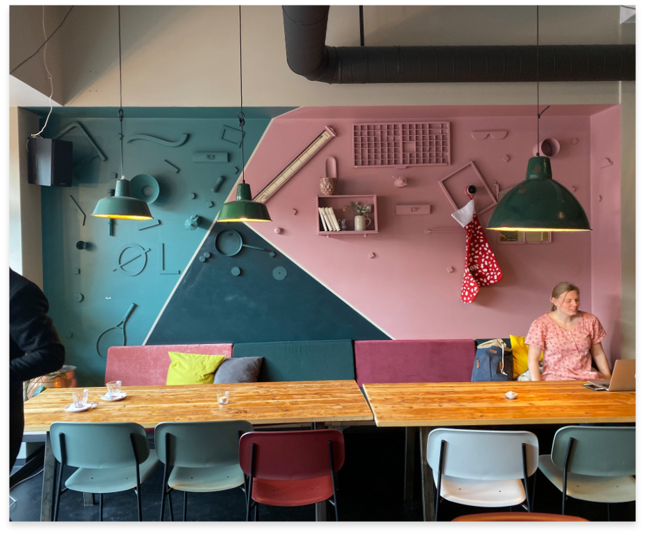
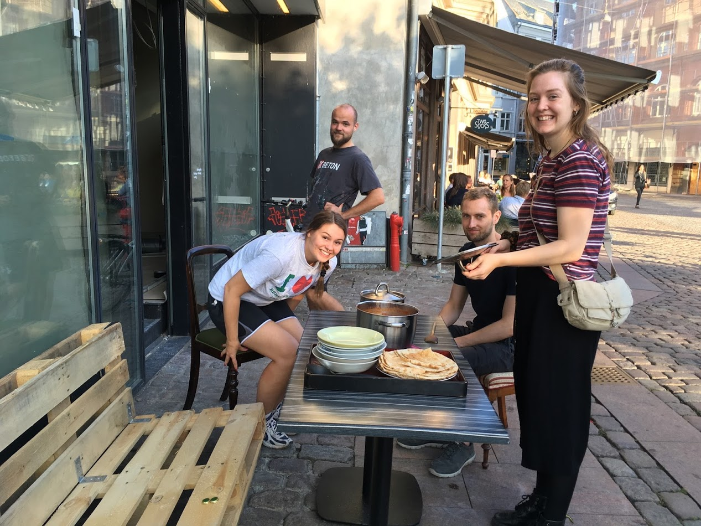

Læs mere
Om os
Fairbar er KFUM og KFUK’s non-profit café, der bliver drevet af over 100 frivillige og tilbyder Aarhusianerne over 200 gratis events om året fra koncerter og stand-up til film- og debataftener. Det gør os til ét af de største og mest diverse kultursteder i Aarhus med plads til alle.Læs mere

Vores øl
Fairbar er KFUM og KFUK’s non-profit café, der bliver drevet af over 100 frivillige og tilbyder Aarhusianerne over 200 gratis events om året fra koncerter og stand-up til film- og debataftener. Det gør os til ét af de største og mest diverse kultursteder i Aarhus med plads til alle.Læs mere

Læs mere
Bliv frivillig
Fairbar er KFUM og KFUK’s non-profit café, der bliver drevet af over 100 frivillige og tilbyder Aarhusianerne over 200 gratis events om året fra koncerter og stand-up til film- og debataftener. Det gør os til ét af de største og mest diverse kultursteder i Aarhus med plads til alle.Læs mere